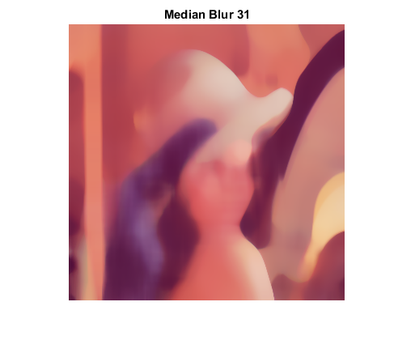

Smoothing Demo
Sample code for simple filters
Sources:
Contents
Global Variables
DELAY_CAPTION = 0.1; DELAY_BLUR = 0.01; MAX_KERNEL_LENGTH = 31;
Source Image
Load the source image
src = imread(fullfile(mexopencv.root(),'test','lena.jpg')); src = cv.resize(src, 2/3, 2/3); imshow(src), title('Original Image') pause(DELAY_CAPTION) %dst = cv.putText(src, 'Original Image', [size(src,2) size(src,1)]./4, ... % 'FontFace','HersheyComplex', 'FontScale',1, 'Color',[255 255 255]);
Homogeneous blur
for i=1:2:MAX_KERNEL_LENGTH dst = cv.blur(src, 'KSize',[i i], 'Anchor',[-1,-1]); imshow(dst), title(sprintf('Homogeneous Blur %d',i)) pause(DELAY_BLUR) end
Gaussian blur
for i=1:2:MAX_KERNEL_LENGTH dst = cv.GaussianBlur(src, 'KSize',[i i]); imshow(dst), title(sprintf('Gaussian Blur %d',i)) pause(DELAY_BLUR) end
Median blur
for i=1:2:MAX_KERNEL_LENGTH dst = cv.medianBlur(src, 'KSize',i); imshow(dst), title(sprintf('Median Blur %d',i)) pause(DELAY_BLUR) end
Bilateral Filter
for i=1:2:MAX_KERNEL_LENGTH dst = cv.bilateralFilter(src, 'Diameter',i, ... 'SigmaColor',i*2, 'SigmaSpace',fix(i/2)); imshow(dst), title(sprintf('Bilateral Blur %d',i)) pause(DELAY_BLUR) end